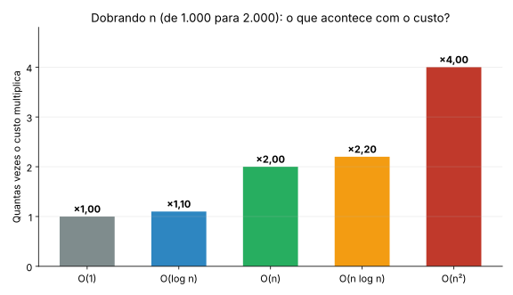
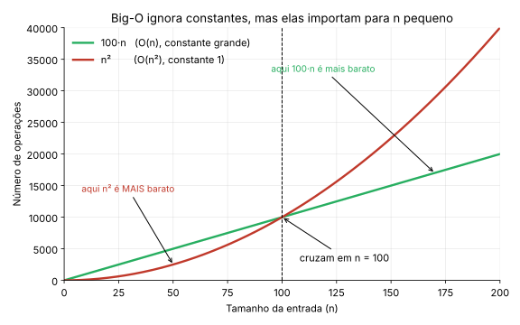
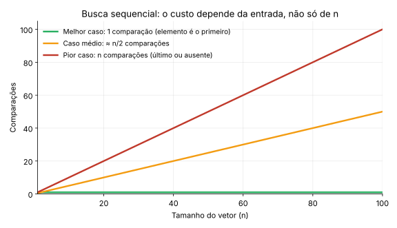
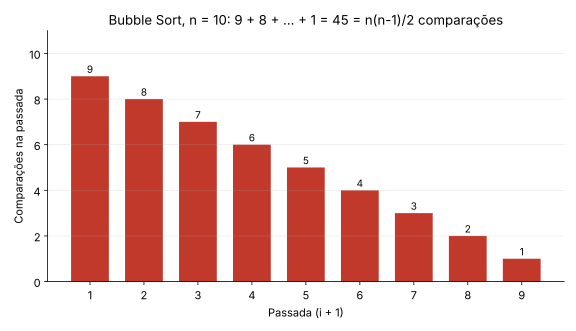

Algoritmos de Ordenação Básicos¶
Disciplina: Estrutura de Dados
Neste capítulo estudamos três algoritmos clássicos de ordenação (Bubble Sort, Selection Sort e Insertion Sort) e, ao mesmo tempo, aprendemos a analisá-los: a teoria de complexidade (notação Big-O) é apresentada aqui, na Seção 2, e usada em todos os algoritmos que vêm depois.
Material de Apoio
Você pode complementar este capítulo com os Slides sobre Algoritmos de Ordenação Básicos.
Onde este capítulo se encaixa
- Este capítulo: algoritmos O(n²) e toda a teoria de complexidade.
- Próximo capítulo: algoritmos eficientes, O(n log n) (Merge Sort, Quick Sort e Heap Sort).
- Capítulo de Análise Experimental e Ferramentas: como medir o que a teoria prevê (tempo, contagem de operações,
gcov,gprofecppcheck). É ele que sustenta o Trabalho Prático de Ordenação.
1. O Que É Ordenação?¶
Definição: Ordenação é o processo de rearranjar os elementos de uma coleção em uma sequência específica, geralmente crescente ou decrescente, com base em uma chave de comparação.
// Exemplo: vetor não ordenado → ordenado (crescente)
Entrada: [64, 34, 25, 12, 22, 11, 90]
Saída: [11, 12, 22, 25, 34, 64, 90]
1.1 Aplicações Práticas da Ordenação¶
| Aplicação | Benefício da Ordenação |
|---|---|
| Busca em listas | Busca binária exige dados ordenados → O(log n) vs O(n) |
| Remoção de duplicatas | Elementos iguais ficam adjacentes → detecção O(n) |
| Relatórios e visualização | Dados organizados facilitam interpretação humana |
| Processamento de bancos de dados | Índices ordenados aceleram consultas |
| Algoritmos de união/interseção | Operações em conjuntos tornam-se lineares |
Insight
Muitos algoritmos complexos assumem dados ordenados como pré-condição. Ordenar pode ser o "custo inicial" que viabiliza operações eficientes depois.
2. Complexidade de Algoritmos¶
Esta seção reúne toda a teoria de que precisamos. Os capítulos seguintes apenas a aplicam. Ela está organizada do mais intuitivo para o mais formal: primeiro a ideia, depois a notação, depois uma receita para analisar código.
2.1 Por Que Analisar Complexidade?¶
Dois algoritmos podem resolver o mesmo problema, mas com desempenhos drasticamente diferentes conforme o tamanho da entrada n.
Algoritmo A: ordena 1000 elementos em 0.01s
Algoritmo B: ordena 1000 elementos em 2.5s
Qual usar para 1 milhão de elementos?
→ Precisamos de uma métrica independente de hardware: COMPLEXIDADE.
Medir o tempo com um cronômetro tem dois problemas: o resultado depende da máquina (compilador, processador, carga do sistema) e só vale para os tamanhos que você testou. A análise de complexidade resolve isso respondendo a uma pergunta diferente:
Quando o tamanho da entrada cresce, como cresce a quantidade de trabalho do algoritmo?
2.2 A Ideia Central: Contar Operações em Função de n¶
Em vez de medir segundos, contamos operações básicas (comparações, trocas, atribuições) em função do tamanho da entrada n. O resultado é uma função de custo, que chamamos de T(n).
Exemplo: encontrar o maior elemento de um vetor.
int maximo(int v[], int n) {
int max = v[0]; // 1 atribuição
for (int i = 1; i < n; i++) { // o corpo roda n-1 vezes
if (v[i] > max) { // 1 comparação por iteração
max = v[i];
}
}
return max;
}
O laço faz n - 1 comparações, então T(n) = n - 1 comparações (mais algumas operações constantes). Se n dobra, o trabalho dobra: o crescimento é linear.
Mas por que podemos ignorar constantes e termos pequenos? Considere um algoritmo com custo T(n) = 3n² + 5n + 2. Veja quanto do custo total vem do termo 3n²:
n |
3n² | 5n + 2 | Parte do total que vem de 3n² |
|---|---|---|---|
| 10 | 300 | 52 | 85% |
| 100 | 30.000 | 502 | 98,4% |
| 1.000 | 3.000.000 | 5.002 | 99,8% |
Quanto maior o n, mais o termo de maior ordem domina e o restante fica irrelevante. Por isso dizemos que o algoritmo "é da ordem de n²" e escrevemos O(n²). É isso que a notação Big-O captura: o comportamento de crescimento, sem os detalhes.
2.3 Notação Big-O: Limite Superior¶
Dizemos que f(n) = O(g(n)) se existem constantes c > 0 e n₀ tais que:
Em palavras: a partir de algum tamanho n₀, a função f nunca ultrapassa um múltiplo constante de g. Big-O é um limite superior do crescimento: "o custo cresce no máximo como g(n)".
Exemplo. Se f(n) = 3n² + 5n, então f(n) = O(n²): para n ≥ 1 vale 3n² + 5n ≤ 3n² + 5n² = 8n², ou seja, c = 8 e n₀ = 1. As constantes c e n₀ são o que permite descartar constantes e termos de menor ordem.
Big-O é uma notação para funções, não para casos
Podemos falar do pior caso, do melhor caso ou do caso médio de um algoritmo, e cada um tem a sua função de custo. Quando se diz apenas "o algoritmo é O(n²)", costuma-se referir ao pior caso.
2.4 Notações Irmãs: Ω e Θ¶
| Notação | Significado | Leitura informal | Definição |
|---|---|---|---|
| O(g(n)) | Limite superior | "cresce no máximo como g" |
f(n) ≤ c · g(n) a partir de algum n₀ |
| Ω(g(n)) | Limite inferior | "cresce no mínimo como g" |
f(n) ≥ c · g(n) a partir de algum n₀ |
| Θ(g(n)) | Limite justo | "cresce exatamente como g" |
f(n) é ao mesmo tempo O(g(n)) e Ω(g(n)) |
Por exemplo, o Selection Sort faz sempre n(n-1)/2 comparações; portanto o número de comparações é Θ(n²) em qualquer entrada: nunca é menos, nunca é mais que a ordem de n².
Um cuidado com o vocabulário
Dizer "o Insertion Sort é O(n²)" é correto (é um limite superior), mas diz pouco, porque no melhor caso ele é O(n). Ao descrever um algoritmo, sempre deixe claro de qual caso você está falando.
2.5 Classes de Complexidade Comuns¶
| Notação | Nome | Exemplo prático | Comportamento |
|---|---|---|---|
| O(1) | Constante | Acesso a elemento de vetor por índice | O tempo não muda, independente do tamanho dos dados. |
| O(log n) | Logarítmica | Busca binária, inserção em Árvore AVL | O tamanho do problema é dividido pela metade a cada passo. Cresce muito devagar. |
| O(n) | Linear | Busca sequencial, percurso de lista encadeada | O tempo cresce proporcionalmente ao tamanho da entrada. |
| O(n log n) | Linearítmica | Merge Sort, Quick Sort (caso médio), Heap Sort | Complexidade típica de algoritmos eficientes de ordenação. |
| O(n²) | Quadrática | Bubble, Selection e Insertion Sort (pior caso) | Laços aninhados. Dobrar a entrada quadruplica o tempo. |
| O(2ⁿ) | Exponencial | Força bruta em subconjuntos | Inviável, exceto para n muito pequeno. |
Como cada classe aparece no código:
// O(1): o custo não depende de n
int primeiro(int v[]) { return v[0]; }
// O(n): um laço que percorre o vetor uma vez
long soma(int v[], int n) {
long s = 0;
for (int i = 0; i < n; i++) s += v[i];
return s;
}
// O(log n): o problema é dividido pela metade a cada passo
int contaMetades(int n) {
int passos = 0;
while (n > 1) { n = n / 2; passos++; } // n = 1024 → 10 passos
return passos;
}
// O(n²): dois laços aninhados, cada um com n iterações
int contaPares(int n) {
int pares = 0;
for (int i = 0; i < n; i++)
for (int j = 0; j < n; j++)
pares++; // executa n × n vezes
return pares;
}
Para sentir a diferença, veja o número aproximado de operações:
n |
log₂ n | n log₂ n | n² |
|---|---|---|---|
| 10 | ≈ 3 | ≈ 33 | 100 |
| 1.000 | ≈ 10 | ≈ 10.000 | 1.000.000 |
| 1.000.000 | ≈ 20 | ≈ 20.000.000 | 10¹² |
Com um milhão de elementos, um algoritmo O(n log n) faz cerca de 20 milhões de operações, enquanto um O(n²) faz um trilhão. É a diferença entre uma fração de segundo e horas de processamento.
2.6 Visualizando o Crescimento¶
Comparação das curvas¶

Como ler: o eixo horizontal é o tamanho da entrada e o vertical é o número de operações. As curvas O(1) e O(log n) quase não saem do chão; O(n) é uma reta; O(n log n) sobe um pouco acima da reta; e O(n²) dispara. Para n pequeno as curvas ficam próximas, e é conforme n cresce que a diferença aparece.
O que acontece quando a entrada dobra?¶

Esta é a forma mais prática de reconhecer a complexidade medindo: dobre n e observe o tempo. Se o tempo dobra, é linear. Se quadruplica, é quadrático. Se pouco mais que dobra, é O(n log n). Usaremos esse teste no capítulo de Análise Experimental.
Constantes importam para n pequeno¶

Big-O ignora constantes, e isso é correto para n grande. Mas um algoritmo O(n) com constante 100 (100·n) é mais lento que um O(n²) com constante 1 (n²) enquanto n < 100. Por isso, para vetores pequenos, algoritmos "piores" no papel, como o Insertion Sort, podem vencer algoritmos mais sofisticados.
2.7 Melhor Caso, Pior Caso e Caso Médio¶
O mesmo algoritmo pode se comportar de forma diferente conforme a entrada (aleatória, já ordenada, invertida), mesmo com o mesmo n.
Exemplo clássico: busca sequencial de um valor x em um vetor de n elementos.
- Melhor caso:
xé o primeiro elemento → 1 comparação, O(1). - Pior caso:
xé o último elemento ou não está no vetor →ncomparações, O(n). - Caso médio:
xestá, em média, no meio → ≈ n/2 comparações, ainda O(n).

| Cenário | Definição | Exemplo (Bubble Sort otimizado) |
|---|---|---|
| Melhor caso | Entrada que minimiza as operações | Vetor já ordenado → O(n) |
| Pior caso | Entrada que maximiza as operações | Vetor em ordem inversa → O(n²) |
| Caso médio | Comportamento esperado em entradas aleatórias | Vetor aleatório → O(n²) |
Importante
Em sistemas críticos, planeje sempre para o pior caso. O "caso médio" pode não ocorrer quando você mais precisa.
2.8 Receita: Como Analisar um Código¶
Para encontrar a complexidade de um trecho de código, aplique estas regras:
| Situação no código | Custo | Regra |
|---|---|---|
Comando simples (atribuição, comparação, v[i]) |
O(1) | Custo constante |
| Comandos em sequência | soma dos custos | Vale o maior deles |
Laço de n iterações |
n × custo do corpo |
Multiplica |
| Laços aninhados | produto das iterações | Multiplica os laços |
Laço em que a variável dobra ou divide (i *= 2, n /= 2) |
O(log n) | Metade do problema a cada passo |
if / else |
custo do ramo mais caro | Considere o pior caso |
Exemplo resolvido 1: contando as comparações do Bubble Sort.
for (int i = 0; i < n - 1; i++) {
for (int j = 0; j < n - i - 1; j++) {
if (vetor[j] > vetor[j + 1]) { /* troca */ }
}
}
O laço interno não tem sempre o mesmo tamanho: na passada i, ele faz n - i - 1 comparações. Somando todas as passadas:

Para n = 10 são 9 + 8 + ... + 1 = 45 comparações. As barras formam um triângulo cuja área é n(n-1)/2. Descartando a constante 1/2 e o termo de menor ordem n/2, ficamos com O(n²).
Exemplo resolvido 2: um código com dois blocos.
int temDuplicata(int v[], int n) {
for (int i = 0; i < n; i++) { // n iterações
for (int j = i + 1; j < n; j++) { // até n-1 iterações
if (v[i] == v[j]) return 1;
}
}
return 0;
}
No pior caso (sem duplicatas), o laço interno faz (n-1) + (n-2) + ... + 0 = n(n-1)/2 comparações: O(n²). No melhor caso (v[0] == v[1]), retorna na primeira comparação: O(1). Repare como o mesmo código tem funções de custo diferentes para o melhor e o pior caso.
2.9 Complexidade de Espaço¶
Além do tempo, podemos analisar a memória extra que o algoritmo usa, sem contar o próprio vetor de entrada.
- O(1): usa só algumas variáveis (
i,j,temp). É o caso dos três algoritmos deste capítulo, que ordenam in-place (no próprio vetor). - O(n): precisa de um vetor auxiliar do tamanho da entrada, como o Merge Sort, que veremos no próximo capítulo.
2.10 Erros Comuns ao Interpretar Big-O¶
- "O(n²) significa que leva n² segundos." Não. Big-O descreve como o custo cresce, não quanto tempo leva.
- "O algoritmo O(n) sempre é mais rápido que o O(n²)." Só para
ngrande o suficiente (veja o gráfico das constantes). - "Big-O é sempre o pior caso." Big-O é um limite superior de uma função; qual função (melhor, médio ou pior caso) depende de você dizer.
- "Dois laços = O(n²)." Só se estiverem aninhados. Dois laços em sequência, cada um com
niterações, somam2n, que é O(n).
2.11 A Teoria Prevê, a Medição Confirma¶
A análise teórica diz como o custo cresce. Para verificar isso no seu computador, medimos o tempo de execução e contamos operações (comparações e trocas). Essa parte, com as ferramentas gcov, gprof e cppcheck, está no capítulo de Análise Experimental e Ferramentas. Aqui usaremos apenas medições simples para ilustrar.
3. Bubble Sort: O Algoritmo da "Bolha"¶
3.1 Ideia Conceitual¶
Analogia: Imagine bolhas de ar subindo num copo de refrigerante até a superfície. No Bubble Sort, a cada passada o maior elemento ainda fora do lugar "sobe" como uma bolha até o final do vetor.
Estratégia:
- Compare elementos adjacentes
- Se estiverem fora de ordem, troque-os
- Repita até que nenhuma troca seja necessária
3.2 Exemplo Visual Passo a Passo¶
Vetor inicial: [5, 3, 8, 4, 2]
Passada 1 (maior elemento "flutua" para o final):
[5,3,8,4,2] → [3,5,8,4,2] (troca 5↔3)
[3,5,8,4,2] → [3,5,8,4,2] (5<8, sem troca)
[3,5,8,4,2] → [3,5,4,8,2] (troca 8↔4)
[3,5,4,8,2] → [3,5,4,2,8] (troca 8↔2) ✓ 8 na posição final
Passada 2:
[3,5,4,2,8] → [3,5,4,2,8] (3<5)
[3,5,4,2,8] → [3,4,5,2,8] (troca 5↔4)
[3,4,5,2,8] → [3,4,2,5,8] (troca 5↔2) ✓ 5 na posição
Passada 3:
[3,4,2,5,8] → [3,4,2,5,8] (3<4)
[3,4,2,5,8] → [3,2,4,5,8] (troca 4↔2) ✓ 4 na posição
Passada 4:
[3,2,4,5,8] → [2,3,4,5,8] (troca 3↔2) ✓ 3 na posição
Resultado: [2, 3, 4, 5, 8] ✓
3.3 Implementação em C (Versão Simples)¶
#include <stdio.h>
#include <stdbool.h>
// Bubble Sort simples: sempre faz n(n-1)/2 comparações
void bubbleSort(int vetor[], int n) {
for (int i = 0; i < n - 1; i++) {
// Últimos i elementos já estão ordenados
for (int j = 0; j < n - i - 1; j++) {
if (vetor[j] > vetor[j + 1]) {
// Troca elementos
int temp = vetor[j];
vetor[j] = vetor[j + 1];
vetor[j + 1] = temp;
}
}
}
}
3.4 Otimização: Parada Antecipada¶
// Bubble Sort otimizado: O(n) no melhor caso (já ordenado)
void bubbleSortOtimizado(int vetor[], int n) {
bool trocou;
for (int i = 0; i < n - 1; i++) {
trocou = false; // Flag para detectar se houve troca
for (int j = 0; j < n - i - 1; j++) {
if (vetor[j] > vetor[j + 1]) {
// Troca
int temp = vetor[j];
vetor[j] = vetor[j + 1];
vetor[j + 1] = temp;
trocou = true;
}
}
// Se não houve troca, vetor já está ordenado
if (!trocou) {
printf(" → Parada antecipada na passada %d\n", i + 1);
break;
}
}
}
Ganho
Se o vetor já estiver ordenado, o algoritmo termina em O(n), com apenas uma passada de verificação.
3.5 Análise de Complexidade¶
As duas versões se comportam de forma diferente, e é importante não confundi-las.
Versão simples (Seção 3.3): faz sempre n(n-1)/2 comparações, qualquer que seja a entrada. O que muda com a entrada é o número de trocas.
| Entrada | Comparações | Trocas | Complexidade |
|---|---|---|---|
| Ordenado | n(n-1)/2 | 0 | O(n²) |
| Invertido | n(n-1)/2 | n(n-1)/2 | O(n²) |
| Aleatório | n(n-1)/2 | ≈ n²/4 | O(n²) |
Versão otimizada (Seção 3.4): para quando uma passada não troca nada.
| Cenário | Comparações | Trocas | Complexidade |
|---|---|---|---|
| Melhor caso (ordenado) | n-1 | 0 | O(n) |
| Pior caso (invertido) | n(n-1)/2 ≈ n²/2 | n(n-1)/2 ≈ n²/2 | O(n²) |
| Caso médio (aleatório) | ≈ n²/2 (um pouco menos) | ≈ n²/4 | O(n²) |
Espaço: O(1) — ordenação in-place, sem estruturas auxiliares.
Por que isso importa
Só a versão com parada antecipada tem melhor caso O(n). Ao medir o Bubble Sort (veja o capítulo de Análise Experimental), confira qual versão você está medindo.
4. Selection Sort: Ordenação por Seleção¶
4.1 Ideia Conceitual¶
Analogia: Organizar uma fila de pessoas por altura: procure a mais baixa e troque-a de lugar com quem está na frente; depois procure a mais baixa entre as restantes e coloque-a na segunda posição; e assim por diante.
Estratégia:
- Encontre o menor elemento na parte não ordenada
- Troque-o com o primeiro elemento não ordenado
- Avance o limite da parte ordenada
- Repita até ordenar tudo
4.2 Exemplo Visual Passo a Passo¶
Vetor inicial: [64, 25, 12, 22, 11]
↑
limite da parte ordenada
Passada 1: encontrar mínimo em [64,25,12,22,11] → 11
[64,25,12,22,11] → trocar 64↔11
[11,25,12,22,64] ✓ 11 na posição correta
↑
Passada 2: encontrar mínimo em [25,12,22,64] → 12
[11,25,12,22,64] → trocar 25↔12
[11,12,25,22,64] ✓ 12 na posição correta
↑
Passada 3: encontrar mínimo em [25,22,64] → 22
[11,12,25,22,64] → trocar 25↔22
[11,12,22,25,64] ✓ 22 na posição correta
↑
Passada 4: encontrar mínimo em [25,64] → 25 (já está correto)
[11,12,22,25,64] → sem troca necessária
↑
Resultado: [11, 12, 22, 25, 64] ✓
4.3 Implementação em C¶
// Selection Sort: sempre O(n²), mas com menos trocas que Bubble
void selectionSort(int vetor[], int n) {
for (int i = 0; i < n - 1; i++) {
// Encontra o índice do menor elemento na parte não ordenada
int indiceMenor = i;
for (int j = i + 1; j < n; j++) {
if (vetor[j] < vetor[indiceMenor]) {
indiceMenor = j;
}
}
// Troca apenas se necessário (evita troca consigo mesmo)
if (indiceMenor != i) {
int temp = vetor[i];
vetor[i] = vetor[indiceMenor];
vetor[indiceMenor] = temp;
}
}
}
4.4 Análise de Complexidade¶
| Cenário | Comparações | Trocas | Complexidade |
|---|---|---|---|
| Melhor caso (ordenado) | n(n-1)/2 ≈ n²/2 | 0 | O(n²) |
| Vetor invertido | n(n-1)/2 ≈ n²/2 | ⌊n/2⌋ | O(n²) |
| Pior caso (trocas) | n(n-1)/2 ≈ n²/2 | n-1 | O(n²) |
| Caso médio (aleatório) | ~n²/2 | ≈ n − ln n | O(n²) |
(No vetor invertido, cada troca coloca dois elementos no lugar de uma vez, por isso são só n/2 trocas. O máximo de n−1 trocas ocorre, por exemplo, em [2, 3, ..., n, 1].)
Espaço: O(1) — ordenação in-place.
Vantagem do Selection Sort
Número de trocas é sempre ≤ n-1, útil quando trocar elementos é custoso (ex: registros grandes em disco).
5. Insertion Sort: Ordenação por Inserção¶
5.1 Ideia Conceitual¶
Analogia: Organizar cartas na mão durante um jogo: pegue uma carta por vez e insira-a na posição correta entre as cartas já ordenadas.
Estratégia:
- Considere o primeiro elemento como "ordenado"
- Para cada elemento seguinte:
- Compare com os elementos ordenados à esquerda
- Desloque elementos maiores para a direita
- Insira o elemento na posição correta
- Repita até processar todos os elementos
5.2 Exemplo Visual Passo a Passo¶
Vetor inicial: [5, 2, 4, 6, 1, 3]
↑
elemento atual (i=1)
i=1: elemento=2
[5,2,4,6,1,3] → 5>2, desloca 5 para direita
[_,5,4,6,1,3] → insere 2 na posição 0
[2,5,4,6,1,3] ✓
↑
i=2: elemento=4
[2,5,4,6,1,3] → 5>4, desloca 5
[2,_,5,6,1,3] → 2<4, para de deslocar
[2,4,5,6,1,3] ✓
↑
i=3: elemento=6
[2,4,5,6,1,3] → 5<6, já está na posição correta
[2,4,5,6,1,3] ✓
↑
i=4: elemento=1
[2,4,5,6,1,3] → 6>1, desloca
[2,4,5,_,6,3] → 5>1, desloca
[2,4,_,5,6,3] → 4>1, desloca
[2,_,4,5,6,3] → 2>1, desloca
[_,2,4,5,6,3] → insere 1 na posição 0
[1,2,4,5,6,3] ✓
↑
i=5: elemento=3
[1,2,4,5,6,3] → 6>3, desloca
[1,2,4,5,_,6] → 5>3, desloca
[1,2,4,_,5,6] → 4>3, desloca
[1,2,_,4,5,6] → 2<3, para
[1,2,3,4,5,6] ✓
Resultado: [1, 2, 3, 4, 5, 6] ✓
5.3 Implementação em C¶
// Insertion Sort: eficiente para vetores pequenos ou quase ordenados
void insertionSort(int vetor[], int n) {
for (int i = 1; i < n; i++) {
int chave = vetor[i]; // Elemento a ser inserido
int j = i - 1;
// Desloca elementos maiores que 'chave' para a direita
while (j >= 0 && vetor[j] > chave) {
vetor[j + 1] = vetor[j]; // Deslocamento
j--;
}
// Insere 'chave' na posição correta
vetor[j + 1] = chave;
}
}
5.4 Análise de Complexidade¶
| Cenário | Comparações | Deslocamentos | Complexidade |
|---|---|---|---|
| Melhor caso (ordenado) | n-1 | 0 | O(n) |
| Pior caso (invertido) | n(n-1)/2 ≈ n²/2 | n(n-1)/2 ≈ n²/2 | O(n²) |
| Caso médio (aleatório) | ~n²/4 | ~n²/4 | O(n²) |
Espaço: O(1) — ordenação in-place.
Vantagem do Insertion Sort
- Estável (mantém ordem relativa de elementos iguais)
- Adaptativo: eficiente quando o vetor já está "quase ordenado"
- Online: pode ordenar elementos à medida que chegam
6. Código Completo Compilável (Teste os Três Algoritmos)¶
Neste código, o bubbleSort é a versão otimizada (com parada antecipada), para que o melhor caso do teste 2 seja visível.
#include <stdio.h>
#include <stdlib.h>
#include <time.h>
#include <stdbool.h>
// ===== Utilitários =====
void imprimirVetor(int vetor[], int n, const char* mensagem) {
printf("%s", mensagem);
for (int i = 0; i < n; i++) {
printf("%d ", vetor[i]);
}
printf("\n");
}
void copiarVetor(int origem[], int destino[], int n) {
for (int i = 0; i < n; i++) {
destino[i] = origem[i];
}
}
bool estaOrdenado(int vetor[], int n) {
for (int i = 0; i < n - 1; i++) {
if (vetor[i] > vetor[i + 1]) {
return false;
}
}
return true;
}
// ===== Bubble Sort (versão otimizada) =====
void bubbleSort(int vetor[], int n) {
for (int i = 0; i < n - 1; i++) {
bool trocou = false;
for (int j = 0; j < n - i - 1; j++) {
if (vetor[j] > vetor[j + 1]) {
int temp = vetor[j];
vetor[j] = vetor[j + 1];
vetor[j + 1] = temp;
trocou = true;
}
}
if (!trocou) break; // Otimização: parada antecipada
}
}
// ===== Selection Sort =====
void selectionSort(int vetor[], int n) {
for (int i = 0; i < n - 1; i++) {
int indiceMenor = i;
for (int j = i + 1; j < n; j++) {
if (vetor[j] < vetor[indiceMenor]) {
indiceMenor = j;
}
}
if (indiceMenor != i) {
int temp = vetor[i];
vetor[i] = vetor[indiceMenor];
vetor[indiceMenor] = temp;
}
}
}
// ===== Insertion Sort =====
void insertionSort(int vetor[], int n) {
for (int i = 1; i < n; i++) {
int chave = vetor[i];
int j = i - 1;
while (j >= 0 && vetor[j] > chave) {
vetor[j + 1] = vetor[j];
j--;
}
vetor[j + 1] = chave;
}
}
// ===== Medição de tempo (milissegundos) =====
double medirTempo(void (*func)(int[], int), int vetor[], int n) {
clock_t inicio = clock();
func(vetor, n);
clock_t fim = clock();
return ((double)(fim - inicio)) / CLOCKS_PER_SEC * 1000; // em ms
}
// ===== Main: Comparação prática =====
int main() {
// Vetor de teste
int original[] = {64, 34, 25, 12, 22, 11, 90};
int n = sizeof(original) / sizeof(original[0]);
int vetor[100]; // buffer para cópias
printf("=== Algoritmos de Ordenação Básicos ===\n\n");
// Teste 1: Vetor aleatório pequeno
printf("1. Vetor original: ");
imprimirVetor(original, n, "");
// Bubble Sort
copiarVetor(original, vetor, n);
double t1 = medirTempo(bubbleSort, vetor, n);
printf(" Bubble Sort: ");
imprimirVetor(vetor, n, "");
printf(" Tempo: %.3f ms | Ordenado? %s\n\n", t1, estaOrdenado(vetor, n) ? "✓" : "✗");
// Selection Sort
copiarVetor(original, vetor, n);
double t2 = medirTempo(selectionSort, vetor, n);
printf(" Selection Sort:");
imprimirVetor(vetor, n, "");
printf(" Tempo: %.3f ms | Ordenado? %s\n\n", t2, estaOrdenado(vetor, n) ? "✓" : "✗");
// Insertion Sort
copiarVetor(original, vetor, n);
double t3 = medirTempo(insertionSort, vetor, n);
printf(" Insertion Sort:");
imprimirVetor(vetor, n, "");
printf(" Tempo: %.3f ms | Ordenado? %s\n\n", t3, estaOrdenado(vetor, n) ? "✓" : "✗");
// Teste 2: Vetor já ordenado (melhor caso para Insertion/Bubble otimizado)
printf("2. Melhor caso (vetor já ordenado):\n");
for (int i = 0; i < n; i++) original[i] = i + 1;
copiarVetor(original, vetor, n);
t1 = medirTempo(bubbleSort, vetor, n);
printf(" Bubble Sort: %.3f ms\n", t1);
copiarVetor(original, vetor, n);
t2 = medirTempo(selectionSort, vetor, n);
printf(" Selection Sort: %.3f ms\n", t2);
copiarVetor(original, vetor, n);
t3 = medirTempo(insertionSort, vetor, n);
printf(" Insertion Sort: %.3f ms ← mais rápido neste cenário!\n\n", t3);
// Teste 3: Vetor invertido (pior caso)
printf("3. Pior caso (vetor invertido):\n");
for (int i = 0; i < n; i++) original[i] = n - i;
copiarVetor(original, vetor, n);
t1 = medirTempo(bubbleSort, vetor, n);
printf(" Bubble Sort: %.3f ms\n", t1);
copiarVetor(original, vetor, n);
t2 = medirTempo(selectionSort, vetor, n);
printf(" Selection Sort: %.3f ms\n", t2);
copiarVetor(original, vetor, n);
t3 = medirTempo(insertionSort, vetor, n);
printf(" Insertion Sort: %.3f ms\n\n", t3);
printf("✅ Todos os algoritmos produziram resultados corretos!\n");
printf("📌 Observação: Para vetores pequenos, as diferenças são mínimas.\n");
printf(" Para n grande (>1000), algoritmos O(n²) tornam-se inviáveis.\n");
return 0;
}
Saída esperada (exemplo):
=== Algoritmos de Ordenação Básicos ===
1. Vetor original: 64 34 25 12 22 11 90
Bubble Sort: 11 12 22 25 34 64 90
Tempo: 0.002 ms | Ordenado? ✓
Selection Sort:11 12 22 25 34 64 90
Tempo: 0.001 ms | Ordenado? ✓
Insertion Sort:11 12 22 25 34 64 90
Tempo: 0.001 ms | Ordenado? ✓
2. Melhor caso (vetor já ordenado):
Bubble Sort: 0.000 ms
Selection Sort: 0.001 ms
Insertion Sort: 0.000 ms ← mais rápido neste cenário!
3. Pior caso (vetor invertido):
Bubble Sort: 0.003 ms
Selection Sort: 0.002 ms
Insertion Sort: 0.003 ms
✅ Todos os algoritmos produziram resultados corretos!
📌 Observação: Para vetores pequenos, as diferenças são mínimas.
Para n grande (>1000), algoritmos O(n²) tornam-se inviáveis.
Medir com mais rigor
Com n = 7, os tempos estão abaixo da resolução do relógio e não dizem nada. Para medir de verdade (vários valores de n, repetições, contagem de comparações e trocas), veja o capítulo de Análise Experimental e Ferramentas.
7. Comparação Direta: Qual Algoritmo Usar?¶
| Critério | Bubble Sort | Selection Sort | Insertion Sort |
|---|---|---|---|
| Complexidade (pior caso) | O(n²) | O(n²) | O(n²) |
| Complexidade (melhor caso) | O(n)* | O(n²) | O(n) |
| Número de trocas | O(n²) | O(n) ✓ | O(n²) |
| Memória extra | O(1) | O(1) | O(1) |
| Estável | ✓ | ✗ | ✓ |
| Adaptativo | ✓* | ✗ | ✓✓ |
| Online | ✗ | ✗ | ✓ |
| Simplicidade | ✓✓✓ | ✓✓ | ✓✓ |
| Indicado para | Ensino, vetores muito pequenos | Quando trocas são custosas | Vetores pequenos ou quase ordenados |
*Com otimização de parada antecipada
Regra Prática de Escolha¶
✅ Use Insertion Sort se:
- n < 50 (pequeno)
- Dados já estão "quase ordenados"
- Precisa de estabilidade
✅ Use Selection Sort se:
- Trocar elementos é operação cara (ex: structs grandes)
- Quer minimizar número de escritas na memória
✅ Use Bubble Sort se:
- Está aprendendo conceitos de ordenação
- Precisa de código extremamente simples para prototipagem
❌ Evite todos os três se:
- n > 1000 → use Merge Sort, Quick Sort ou biblioteca padrão (qsort)
8. Exercícios para Fixação¶
Exercício 1 — Simulação Manual¶
Dado o vetor [8, 3, 5, 1, 9], simule passo a passo:
a) Bubble Sort (com otimização): quantas passadas foram necessárias?
b) Selection Sort: quantas trocas foram realizadas?
c) Insertion Sort: quantos deslocamentos ocorreram ao inserir o elemento 1?
💡 Gabarito parcial
a) Bubble Sort:
Passada 1: [3,5,1,8,9] → trocas: 8↔3, 8↔5, 8↔1
Passada 2: [3,1,5,8,9] → trocas: 5↔1
Passada 3: [1,3,5,8,9] → trocas: 3↔1
Passada 4: [1,3,5,8,9] → sem trocas → parada antecipada
Total: 4 passadas (mas parou na 4ª por otimização)
b) Selection Sort:
Troca 1: 8↔1 → [1,3,5,8,9]
Troca 2: nenhuma (3 já é o menor do restante)
Troca 3: nenhuma
Troca 4: nenhuma
Total: 1 troca
c) Insertion Sort ao inserir 1 (i=3):
[3,5,8,1,9] → 8>1 → desloca → [3,5,_,8,9]
→ 5>1 → desloca → [3,_,5,8,9]
→ 3>1 → desloca → [_,3,5,8,9]
→ insere 1 → [1,3,5,8,9]
Total: 3 deslocamentos
Exercício 2 — Modificação de Código¶
Modifique o insertionSort para ordenar em ordem decrescente. Teste com [5, 2, 8, 1, 9].
💡 Solução
Exercício 3 — Contagem de Operações¶
Adicione contadores ao bubbleSort (versão simples, Seção 3.3) para registrar:
comparacoes: número de vezes quevetor[j] > vetor[j+1]foi avaliadotrocas: número de trocas efetivas realizadas
Execute com vetores de tamanhos 10, 50 e 100 (aleatórios) e preencha a tabela:
| n | Comparações | Trocas | Razão Trocas/Comparações |
|---|---|---|---|
| 10 | ? | ? | ? |
| 50 | ? | ? | ? |
| 100 | ? | ? | ? |
Depois, repita com um vetor já ordenado, primeiro na versão simples e depois na otimizada, e compare o número de comparações.
💡 Objetivo: Verificar empiricamente que o número de operações cresce quadraticamente e que a parada antecipada muda o melhor caso.
Exercício 4 — Qual É a Complexidade?¶
Determine a complexidade de tempo de cada trecho (considere x++ como uma operação de custo constante):
// (a)
for (int i = 0; i < n; i++)
for (int j = 0; j < n; j++)
x++;
// (b)
for (int i = 0; i < n; i++) x++;
for (int j = 0; j < n; j++) y++;
// (c)
for (int i = 1; i < n; i *= 2) x++;
// (d)
for (int i = 0; i < n; i++)
for (int j = 0; j < i; j++)
x++;
// (e)
for (int i = 0; i < n; i++)
for (int j = 1; j < n; j *= 2)
x++;
💡 Gabarito
Exercício 5 — Provando um Big-O¶
Mostre que f(n) = 3n² + 5n é O(n²), indicando valores de c e n₀. A função f(n) = 3n² + 5n também é Ω(n²)? E Θ(n²)?
💡 Gabarito
Exercício 6 — O Que Acontece Quando n Cresce?¶
Um algoritmo O(n²) ordena 1.000 elementos em 10 ms. Estime o tempo para 2.000 e para 10.000 elementos. E se o algoritmo fosse O(n log n)?
💡 Gabarito
O(n²): dobrar n quadruplica o tempo.
n = 2.000 → ≈ 4 × 10 ms = 40 ms
n = 10.000 → ≈ 100 × 10 ms = 1.000 ms (1 s), pois 10× mais dados custa 10² = 100×
O(n log n): dobrar n pouco mais que dobra o tempo.
n = 2.000 → ≈ 2,2 × 10 ms ≈ 22 ms
n = 10.000 → ≈ 13 × 10 ms ≈ 130 ms
(10× mais dados custa cerca de 10 · log₂(10.000)/log₂(1.000) ≈ 13×)
São estimativas: constantes ocultas, cache e o tamanho da entrada alteram os valores reais.
Exercício 7 — Desafio: Ordenação de Structs¶
Defina uma struct para representar um aluno:
Implemente uma versão do insertionSort que ordene um vetor de Aluno por nota decrescente. Em caso de empate na nota, mantenha a ordem original de inserção (estabilidade).
💡 Esboço de solução
void insertionSortAlunos(Aluno alunos[], int n) {
for (int i = 1; i < n; i++) {
Aluno chave = alunos[i]; // Cópia da struct
int j = i - 1;
// Comparação por nota (decrescente), mantendo estabilidade
while (j >= 0 && alunos[j].nota < chave.nota) {
alunos[j + 1] = alunos[j]; // Atribuição de struct funciona em C
j--;
}
alunos[j + 1] = chave;
}
}
9. Discussão: Por Que Estudar Algoritmos O(n²)?¶
9.1 Motivações Pedagógicas¶
✅ Simplicidade conceitual: Fáceis de entender, implementar e depurar
✅ Base para algoritmos avançados: Conceitos como "dividir para conquistar" (Merge/Quick Sort) são construídos sobre essas ideias
✅ Eficiência em cenários específicos: Para n < 50, a diferença entre O(n²) e O(n log n) é irrelevante na prática
✅ Análise de complexidade: Permitem exercitar contagem de operações e raciocínio assintótico
9.2 Quando O(n²) É Aceitável na Prática?¶
| Cenário | Justificativa |
|---|---|
| n pequeno (< 50) | Constantes escondidas no Big O dominam; código simples é mais manutenível |
| Dados quase ordenados | Insertion Sort adapta-se e opera em ~O(n) |
| Restrições de memória | Algoritmos in-place (O(1) espaço) podem ser preferíveis a Merge Sort (O(n) espaço) |
| Prototipagem rápida | Implementar Bubble Sort em 5 minutos pode ser mais produtivo que integrar biblioteca externa |
9.3 O Próximo Nível: Algoritmos O(n log n)¶
🔜 No próximo capítulo: Merge Sort, Quick Sort e Heap Sort — como quebrar a barreira O(n²) usando divisão e conquista.
Comparação teórica para n = 10.000:
Algoritmo | Comparações aproximadas | Relativo ao Merge*
------------|-------------------------|-------------------
Bubble | 50.000.000 (n²/2) | ~380x
Selection | 50.000.000 (n²/2) | ~380x
Insertion | 25.000.000 (n²/4, médio)| ~190x
Merge Sort | 130.000 (n log₂ n) | 1x (base)
Quick Sort | 180.000 (1,39 n log₂ n, médio) | ~1,4x
* Supondo o mesmo custo por comparação; na prática, constantes e
acesso à memória mudam esses números.
10. Resumo do Capítulo¶
✅ Complexidade
- Big-O é um limite superior; Ω é o limite inferior; Θ é o limite justo
- Big-O descreve funções de custo: melhor, médio e pior caso têm funções diferentes
- Descartamos constantes e termos de menor ordem; dois laços aninhados sobre
nresultam em O(n²) - Dobrar
nquadruplica o tempo de um algoritmo O(n²), e dobra o de um O(n) - Receita: sequência soma, laços aninhados multiplicam, laço que divide ao meio é O(log n)
- Big-O ignora constantes, mas elas importam para
npequeno
✅ Bubble Sort
- Ideia: elementos maiores "flutuam" para o final
- Versão simples: sempre
n(n-1)/2comparações - Versão otimizada (parada antecipada): O(n) no melhor caso
- Simples, mas ineficiente para grandes conjuntos
✅ Selection Sort
- Ideia: selecionar o menor elemento e colocá-lo na posição correta
- Sempre O(n²) em comparações, mas com mínimo de trocas (≤ n-1)
- Útil quando trocar é operação custosa
✅ Insertion Sort
- Ideia: inserir cada elemento na posição correta entre os já ordenados
- O(n) no melhor caso (dados já ordenados ou quase)
- Estável, adaptativo e online — versátil para cenários reais
✅ Boas práticas de implementação em C
- Passar vetor por referência (já é padrão em C)
- Usar
boolpara flags de otimização - Validar resultados com a função auxiliar
estaOrdenado() - Medir tempo com
clock()e confrontar com a teoria
✅ Critérios de escolha
- Para ensino e pequenos dados: qualquer um dos três
- Para produção com
ngrande: migrar para Merge/Quick Sort - Sempre considerar: tamanho dos dados, custo de troca, necessidade de estabilidade
11. Próximos Passos & Ferramentas¶
🔜 No próximo capítulo: Algoritmos eficientes de ordenação
- Merge Sort: divisão, conquista e intercalação
- Quick Sort: particionamento e pivô
- Heap Sort
- Comparação prática: quando usar cada um
🛠️ No capítulo de Análise Experimental e Ferramentas: medição rigorosa (vários n, repetições, comparações e trocas), cobertura com gcov, profiling com gprof e análise estática com cppcheck.
🛠️ Prática sugerida:
- Compile e execute o código completo da Seção 6
- Modifique para gerar vetores aleatórios de tamanhos variados (100, 1000, 5000)
- Meça e grafique o tempo de execução vs. tamanho do vetor (use planilha ou Python)
- Valide que o crescimento segue ~n² para os três algoritmos
📚 Leitura complementar:
- ZIVIANI, N. Projeto de Algoritmos. Capítulo 4: Ordenação.
- CORMEN et al. Introduction to Algorithms. Capítulo 2: Getting Started (análise de algoritmos).
- USP-IME. Pythonds em Português: https://panda.ime.usp.br/panda/static/pythonds_pt/05-OrdenacaoBusca/
📌 Dica para provas e trabalhos:
- Ao analisar complexidade, conte laços aninhados: dois laços sobre
n→ O(n²)- Para simular algoritmos no papel, desenhe o vetor a cada passo — evita erros de raciocínio
- Lembre-se: Big O ignora constantes, mas na prática, constantes importam para
npequeno!
Material elaborado para a disciplina de Estrutura de Dados — Curso de Engenharia de Computação
Prof. Sérgio Souza Costa | Atualizado: 2026